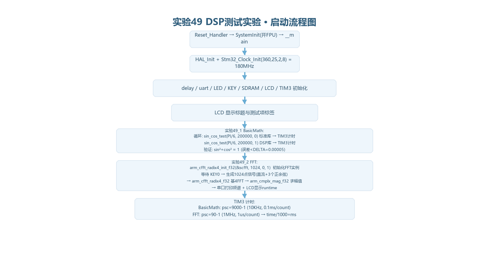
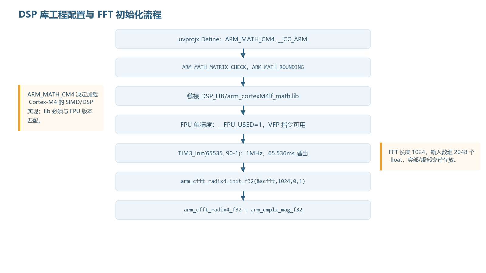
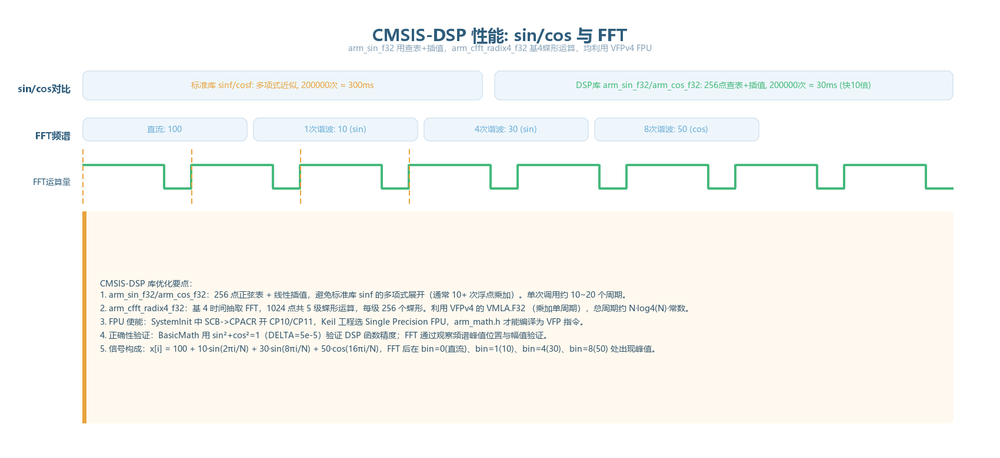
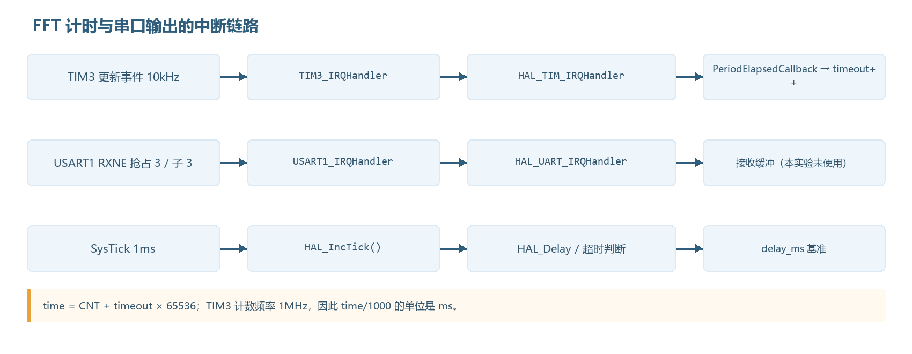

01 工程概述与硬件资源
同一块板子，用 CMSIS-DSP 做 1024 点基 4 FFT，并与普通 C 数学库对照
实验49 有两个子工程：49_1 用 20 万次 sin/cos 计算比较 sinf/cosf 与 arm_sin_f32/arm_cos_f32 的耗时；49_2 生成一段“直流 + 三个单音”的信号，做 1024 点基 4 FFT，再求复数模并逐点打印。两者都不接外部模块，只依赖 LCD、按键、串口和 TIM3。
| 资源 | 配置 | 用途 |
|---|---|---|
| STM32F429IGT6 | 180MHz，单精度 FPU | 执行 DSP 库的 SIMD 乘加 |
| CMSIS-DSP | arm_cortexM4lf_math.lib | FFT、三角函数、求模 |
| LCD | RGB565，800×480 | 显示标题与运行时间 |
| KEY0 | PE4 | 触发一次 FFT |
| TIM3 | 1MHz 计数（49_2） | 测 FFT 耗时 |
| USART1 | 115200-8-N-1 | 打印 1024 个幅值 |
FFT_LENGTH = 1024
输入 2048 float
输出 1024 float
基 4 蝶形
TIM3 1MHz
两个子工程的分工
- 49_1 只看“函数级”差异：同一个角度，两条实现路径的耗时。
- 49_2 看“算法级”差异：FFT 把 1024 点 DFT 的 O(N²) 降到 O(N log N)。
- 两者都用 FPU；若关闭 FPU，arm_math 的浮点版本会退化成软件库，优势消失。
本页以 49_2（FFT）为主线，49_1 的 BasicMath 对照放在第 11 节说明。
02 启动流程总览
初始化顺序与实验48 相同，多了一步“初始化 FFT 结构体”
int main(void)
{
arm_cfft_radix4_instance_f32 scfft;
u8 key,t=0;
float time;
u8 buf[50];
u16 i;
HAL_Init(); // 1ms 时基
Stm32_Clock_Init(360,25,2,8); // 180MHz
delay_init(180);
uart_init(115200);
LED_Init();
KEY_Init();
SDRAM_Init(); // LCD 显存
LCD_Init();
TIM3_Init(65535,90-1); // 1MHz，65.536ms 溢出
POINT_COLOR=RED;
LCD_ShowString(30,50,200,16,16,"Apollo STM32F4/F7");
LCD_ShowString(30,70,200,16,16,"DSP FFT TEST");
LCD_ShowString(30,90,200,16,16,"ATOM@ALIENTEK");
LCD_ShowString(30,110,200,16,16,"2016/1/17");
LCD_ShowString(30,130,200,16,16,"KEY0:Run FFT");
LCD_ShowString(30,160,200,16,16,"FFT runtime:");
POINT_COLOR=BLUE;
arm_cfft_radix4_init_f32(&scfft,FFT_LENGTH,0,1); // 1024 点，正变换，位反转
while(1)
{
key=KEY_Scan(0);
if(key==KEY0_PRES)
{
/* 生成信号 + 执行 FFT + 求模 + 打印 */
}
else delay_ms(10);
t++;
if((t%10)==0)LED0=!LED0; // 100ms 翻转一次
}
}
为什么 FFT 结构体要在 while 外初始化
arm_cfft_radix4_init_f32只计算旋转因子表与配置，与输入数据无关。- 放在循环内会重复初始化，白白增加每次按键的耗时。
fft_inputbuf是原地运算，初始化只需一次。
TIM3 在 49_2 里是
90-1 分频，即 1MHz；49_1 里是 9000-1，即 10kHz。两页的 time/1000 与 time/10 不能混用。03 状态交互演示
先看启动链路，再点按钮观察“单音频率”与 FFT 谱线位置的对应

信号合成与谱线演示（对应 KEY0 触发）
FFT 完成
DSP 库使能
尚未执行 输入：DC 100 + 10·sin(1) + 30·sin(4) + 50·cos(8)
演示与源码的对应关系
- 输入实部由四项叠加：直流 100、1 倍频 10、4 倍频 30、8 倍频 50。
- 虚部全部为 0，所以是实信号；实信号的幅值谱关于 N/2 对称。
- 谱线索引 k 表示“每个记录周期内 k 个完整周期”，不是赫兹。
演示只说明谱线位置，不伪造具体幅值；真实幅值由串口打印的
fft_outputbuf[] 给出。04 启动文件与复位入口
DSP 库同样是普通 C 函数，复位入口与其它工程完全一致
startup_stm32f429xx.s 负责向量表、栈和复位入口。DSP 库不改变启动流程，它只是被链接进来的静态库；真正影响 DSP 性能的是 FPU 选项与库版本。
Stack_Size EQU 0x800; // 2KB 栈，FFT 函数局部变量不多 AREA STACK, NOINIT, READWRITE, ALIGN=3 Stack_Mem SPACE Stack_Size __initial_sp Reset_Handler PROC EXPORT Reset_Handler [WEAK] IMPORT SystemInit IMPORT __main LDR R0, =SystemInit BLX R0 // FPU/时钟复位 LDR R0, =__main BX R0 // C 库入口 → main ENDP ALIGN IF :DEF:__MICROLIB EXPORT __initial_sp EXPORT __heap_base EXPORT __heap_limit ELSE IMPORT __use_two_region_memory EXPORT __user_initial_stackheap __user_initial_stackheap LDR R0, = Heap_Mem LDR R1, =(Stack_Mem + Stack_Size) LDR R2, = (Heap_Mem + Heap_Size) LDR R3, = Stack_Mem BX LR ENDIF
DSP 工程的启动差异
- 启动文件不变，但工程必须把
arm_cortexM4lf_math.lib加入链接。 - 若库选成
arm_cortexM4l_math.lib（非 f 版本），浮点 FFT 会走软件实现。 __FPU_USED仍由编译器选项决定，与库文件名无关。
库名里的
lf 表示 little-endian + FPU；选错库通常不会报错，但运行时间会明显变长。05 系统时钟与 HAL 初始化
180MHz + 单精度 FPU 是 DSP 库发挥性能的两个前提
void SystemInit(void)
{
#if (__FPU_PRESENT == 1) && (__FPU_USED == 1)
SCB->CPACR |= ((3UL << 10*2)|(3UL << 11*2)); // CP10/CP11 全访问
#endif
RCC->CR |= (uint32_t)0x00000001; // HSI 打开
RCC->CFGR = 0x00000000; // 时钟源切回 HSI
RCC->CR &= (uint32_t)0xFEF6FFFF; // 关闭 PLL/HSE/CSS
RCC->PLLCFGR = 0x24003010;
RCC->CFGR &= ~RCC_CFGR_SW;
RCC->CIR = 0x00000000;
}
HAL_StatusTypeDef HAL_Init(void)
{
__HAL_FLASH_INSTRUCTION_CACHE_ENABLE();
__HAL_FLASH_DATA_CACHE_ENABLE();
__HAL_FLASH_PREFETCH_BUFFER_ENABLE();
HAL_NVIC_SetPriorityGrouping(NVIC_PRIORITYGROUP_2);
HAL_InitTick(TICK_INT_PRIORITY); // SysTick 1ms
HAL_MspInit();
return HAL_OK;
}
系统时钟仍由 Stm32_Clock_Init(360,25,2,8) 配置：25MHz 晶振 ÷ 25 × 360 ÷ 2 = 180MHz，APB1 = 45MHz，APB2 = 90MHz。TIM3 挂在 APB1，定时器时钟为 90MHz。
时钟对 FFT 的影响
- FFT 是纯计算，耗时基本与主频成反比。
- Flash 等待周期设为 5WS，取指与数据访问才能跟上 180MHz。
- Over-Drive 必须打开，否则 180MHz 下芯片工作不稳定。
不要为了“更准”把 SysTick 改成微秒中断；FFT 计时用的是 TIM3 硬件计数器，与 SysTick 无关。
06 延时、串口与基础驱动
1024 行打印会占不少时间，按下 KEY0 后串口会持续输出一段时间
int fputc(int ch, FILE *f)
{
while((USART1->SR&0X40)==0); // 等发送寄存器空
USART1->DR=(u8)ch;
return ch;
}
for(i=0;i<FFT_LENGTH;i++)
{
printf("fft_outputbuf[%d]:%f\r\n",i,fft_outputbuf[i]); // 1024 行
}
按 115200bps、每行约 25 字节估算，1024 行大约需要 2 秒以上。串口打印在 FFT 计算之后执行，不影响 time 的测量结果，但会推迟下一次按键响应。
打印与测量的先后关系
- 先读
TIM3->CNT得到耗时，再调用arm_cmplx_mag_f32。 - 求模不在计时窗口内，所以日志里的时间只包含 FFT 蝶形运算。
- printf 是阻塞的，但发生在计时结束之后。
若只想看耗时，可以把 1024 行打印注释掉；否则串口会成为整个循环的瓶颈。
07 核心外设初始化：DSP 库与 TIM3
工程宏、库文件、FPU、定时器，四者缺一不可

// uvprojx 的 C/C++ Define 中必须包含： ARM_MATH_CM4, __CC_ARM, ARM_MATH_MATRIX_CHECK, ARM_MATH_ROUNDING // 链接的库： DSP_LIB\arm_cortexM4lf_math.lib // l = little-endian，f = FPU // 代码中的 FFT 初始化： arm_cfft_radix4_instance_f32 scfft; arm_cfft_radix4_init_f32(&scfft,FFT_LENGTH,0,1); // 参数 2：FFT 长度 1024 // 参数 3：ifftFlag=0，正变换 // 参数 4：bitReverseFlag=1，输出按自然顺序排列 void TIM3_Init(u16 arr,u16 psc) { TIM3_Handler.Instance=TIM3; TIM3_Handler.Init.Prescaler=psc; // 89 TIM3_Handler.Init.CounterMode=TIM_COUNTERMODE_UP; TIM3_Handler.Init.Period=arr; // 65535 TIM3_Handler.Init.ClockDivision=TIM_CLOCKDIVISION_DIV1; HAL_TIM_Base_Init(&TIM3_Handler); HAL_TIM_Base_Start_IT(&TIM3_Handler); }
三个宏的作用
ARM_MATH_CM4：选择 Cortex-M4 的 DSP 实现与 SIMD 指令。ARM_MATH_MATRIX_CHECK：矩阵运算时检查维度，本实验未用到但保留。ARM_MATH_ROUNDING：定点转浮点时使用舍入而不是截断。
TIM3 的 1MHz 来自 90MHz / (89 + 1)。如果误写成
9000-1，计时会慢 100 倍，日志里的毫秒数会被放大。08 时序与数据流
按键 → 生成 2048 个 float → 基 4 FFT → 求模 → 打印，计时只包住蝶形运算

if(key==KEY0_PRES)
{
for(i=0;i<FFT_LENGTH;i++) // 生成 1024 个复数
{
fft_inputbuf[2*i]=100+
10*arm_sin_f32(2*PI*i/FFT_LENGTH)+
30*arm_sin_f32(2*PI*i*4/FFT_LENGTH)+
50*arm_cos_f32(2*PI*i*8/FFT_LENGTH); // 实部
fft_inputbuf[2*i+1]=0; // 虚部为 0
}
__HAL_TIM_SET_COUNTER(&TIM3_Handler,0); // 计时开始
timeout=0;
arm_cfft_radix4_f32(&scfft,fft_inputbuf); // 原地基 4 FFT
time=__HAL_TIM_GET_COUNTER(&TIM3_Handler)
+(u32)timeout*65536; // 1MHz 计数
sprintf((char*)buf,"%0.3fms\r\n",time/1000); // 计数/1000 = ms
arm_cmplx_mag_f32(fft_inputbuf,fft_outputbuf,FFT_LENGTH); // 求模
}
数组布局
fft_inputbuf[2*i]是第 i 点实部，[2*i+1]是虚部，共 2048 个 float。arm_cfft_radix4_f32是原地运算，结果仍写回fft_inputbuf。arm_cmplx_mag_f32逐点计算 √(re²+im²)，输出到 1024 个 float 的数组。- TIM3 1MHz 下 1 个计数 = 1us，所以
time/1000是毫秒。
生成信号用的
arm_sin_f32 也属于 DSP 库；它不影响 FFT 计时，因为计时从生成之后才开始。09 中断链路
FFT 全程在主循环里同步执行，中断只负责计时溢出与串口

void TIM3_IRQHandler(void)
{
HAL_TIM_IRQHandler(&TIM3_Handler); // HAL 分发更新事件
}
void HAL_TIM_PeriodElapsedCallback(TIM_HandleTypeDef *htim)
{
if(htim==(&TIM3_Handler))
{
timeout++; // 65.536ms 溢出一次
}
}
为什么还需要 timeout
- TIM3 是 16 位计数器，1MHz 下最多计 65.536ms。
- 1024 点 FFT 通常远小于这个值，但保留溢出计数可以防止异常情况下读数回绕。
- 中断优先级为抢占 1、子优先级 3，高于串口（3,3）。
如果 FFT 执行期间被更高优先级中断打断，计时会把中断时间也算进去；本实验中没有这样的中断源。
10 主循环与现象
按一次 KEY0，LCD 显示耗时，串口输出 1024 行幅值
while(1)
{
key=KEY_Scan(0);
if(key==KEY0_PRES)
{
for(i=0;i<FFT_LENGTH;i++) // 合成信号
{
fft_inputbuf[2*i]=100+
10*arm_sin_f32(2*PI*i/FFT_LENGTH)+
30*arm_sin_f32(2*PI*i*4/FFT_LENGTH)+
50*arm_cos_f32(2*PI*i*8/FFT_LENGTH);
fft_inputbuf[2*i+1]=0;
}
__HAL_TIM_SET_COUNTER(&TIM3_Handler,0);
timeout=0;
arm_cfft_radix4_f32(&scfft,fft_inputbuf);
time=__HAL_TIM_GET_COUNTER(&TIM3_Handler)
+(u32)timeout*65536;
sprintf((char*)buf,"%0.3fms\r\n",time/1000);
LCD_ShowString(30+12*8,160,100,16,16,buf); // 屏幕显示耗时
arm_cmplx_mag_f32(fft_inputbuf,fft_outputbuf,FFT_LENGTH);
printf("\r\n%d point FFT runtime:%0.3fms\r\n",
FFT_LENGTH,time/1000);
printf("FFT Result:\r\n");
for(i=0;i<FFT_LENGTH;i++)
{
printf("fft_outputbuf[%d]:%f\r\n",i,fft_outputbuf[i]);
}
}
else delay_ms(10); // 没按键时让出 CPU
t++;
if((t%10)==0)LED0=!LED0; // 100ms 心跳
}
现象解读
- LCD 第二行右侧显示类似
0.4xx ms的 FFT 耗时。 - 串口先打印 “1024 point FFT runtime”，随后是 1024 行幅值。
- 幅值谱在 k=1、4、8 处出现尖峰，k=0 是直流分量。
- LED0 每 100ms 翻转一次，表示主循环还活着。
按下 KEY0 后要等 1024 行打印完才能再次响应；这不是死机，而是串口阻塞。
11 核心数据结构与算法
FFT 参数算式：k 表示每个记录内的周期数，幅值要乘 2/N 才能还原单音幅度
#define FFT_LENGTH 1024 float fft_inputbuf[FFT_LENGTH*2]; // 实部/虚部交错 float fft_outputbuf[FFT_LENGTH]; // 幅值 arm_cfft_radix4_instance_f32 scfft; arm_cfft_radix4_init_f32(&scfft,FFT_LENGTH,0,1); // 输入：x[i] = 100 + 10·sin(2π·1·i/N) + 30·sin(2π·4·i/N) + 50·cos(2π·8·i/N) // 输出：|X[k]|，k = 0..N-1 // 单音幅度 A 对应 |X[k]| ≈ A·N/2（k≠0），直流对应 |X[0]| = A·N
| 谱线 | 来源 | 理论幅值 | 说明 |
|---|---|---|---|
| k = 0 | 直流 100 | 100 × 1024 = 102400 | 不乘 2/N |
| k = 1 | 10·sin(1 周期) | 10 × 512 = 5120 | 正频率单边谱 |
| k = 4 | 30·sin(4 周期) | 30 × 512 = 15360 | 同上 |
| k = 8 | 50·cos(8 周期) | 50 × 512 = 25600 | cos 也是单根谱线 |
| k = N−1 等 | 负频率镜像 | 与正频率对称 | 实信号频谱共轭对称 |
u8 sin_cos_test(float angle,u32 times,u8 mode)
{
float sinx,cosx,result;
u32 i=0;
if(mode==0) // 普通 C 库
{
for(i=0;i<times;i++)
{
cosx=cosf(angle);
sinx=sinf(angle);
result=sinx*sinx+cosx*cosx;
result=fabsf(result-1.0f);
if(result>DELTA)return 0XFF; // 误差超限
angle+=0.001f;
}
}
else // DSP 库
{
for(i=0;i<times;i++)
{
cosx=arm_cos_f32(angle);
sinx=arm_sin_f32(angle);
result=sinx*sinx+cosx*cosx;
result=fabsf(result-1.0f);
if(result>DELTA)return 0XFF;
angle+=0.001f;
}
}
return 0;
}
三个必须记住的算式
- 频率分辨率 Δf = fs / N；没有给定 fs 时，k 只能表示归一化频率 k/N。
- 单音幅值 A 的谱峰约为 A·N/2；要还原 A，需乘 2/N。
- 直流分量不乘 2，直接除以 N。
49_1 的
sin_cos_test 用 sin²+cos²=1 做正确性判据，误差门限 DELTA=0.00005f；两种实现的耗时差就是 DSP 库带来的收益。12 串口调试与日志
先看耗时行，再看谱线数组；不要被 1024 行淹没
printf("\r\n%d point FFT runtime:%0.3fms\r\n",
FFT_LENGTH,time/1000);
printf("FFT Result:\r\n");
for(i=0;i<FFT_LENGTH;i++)
{
printf("fft_outputbuf[%d]:%f\r\n",i,fft_outputbuf[i]);
}
日志阅读顺序
- 先找
runtime，确认 FFT 在毫秒级完成。 - 再看
fft_outputbuf[0]，应接近 102400。 - 再看 1、4、8 三点，应明显高于邻近点。
- 其余点的值接近 0，说明信号干净、没有频谱泄漏之外的干扰。
串口助手建议关闭“自动换行”或使用十六进制显示外的文本模式，否则 1024 行会很难翻。
13 常见问题与排查
FFT 结果不对，先查库、宏、数组长度，再查信号公式
| 现象 | 最可能原因 | 排查动作 |
|---|---|---|
| 全是 0 | 输入数组未填充或 FFT 未执行 | 确认 KEY0 分支与 arm_cfft_radix4_f32 |
| 谱线位置不对 | 信号公式的倍频写错 | 核对 2π·k·i/N 中的 k |
| 幅值差 2 倍 | 忘了单边谱要乘 2/N | 用 A·N/2 对照 |
| 耗时异常大 | 链接了非 FPU 库 | 确认 arm_cortexM4lf_math.lib |
| 编译报未定义 | 没有定义 ARM_MATH_CM4 | 在 C/C++ Define 中补上 |
| 打印到一半卡住 | 串口阻塞或缓冲区满 | 降低打印量或提高波特率 |
排查优先级
- 先确认能编译、能链接，再看运行结果。
- 先看 k=0 直流，再看单音谱线。
- 最后才怀疑 FFT 算法本身；绝大多数问题在输入数组布局。
输入必须是“实部、虚部”交替，且长度是 2N；只填 N 个 float 会读越界。
14 小结
DSP 库把“数学公式”变成“可在 MCU 上跑的计算流水线”
实验49 的关键不是记住某个函数名，而是理解三件事：输入数组的复数布局、FFT 参数的物理含义、幅值与单音幅度之间的换算。49_1 则用 sin²+cos²=1 这个恒等式，把“库函数是否可信”变成可重复的数值测试。
| 层次 | 关键函数 / 宏 | 职责 |
|---|---|---|
| 工程 | ARM_MATH_CM4 / arm_cortexM4lf_math.lib | 选择 DSP 实现与 FPU 版本 |
| 初始化 | arm_cfft_radix4_init_f32 | 设置长度、正反变换、位反转 |
| 运算 | arm_cfft_radix4_f32 | 原地基 4 FFT |
| 后处理 | arm_cmplx_mag_f32 | 复数求模 |
| 计时 | TIM3_Init / timeout | 1MHz 硬件秒表 |
三个结论
- N 点 FFT 需要 2N 个 float 的输入数组，实虚交错。
- k 是归一化频率索引，真实频率 = k·fs/N。
- 单音幅值要乘 2/N 还原，直流要除以 N。
下一页实验50 换一个方向：不拼算力，而是把触摸轨迹变成可识别的字符。